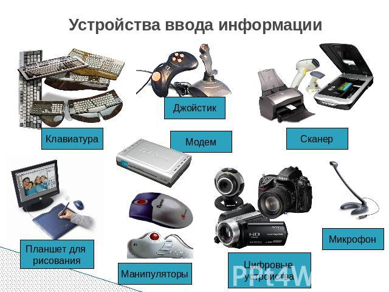

Устройства ввода

Устро́йства вво́да — периферийное оборудование, предназначенное для ввода (занесения) данных или сигналов в
компьютер или в другое электронное устройство во время его работы.
Устройства ввода подразделяются на следующие категории:
устройства ввода графической, звуковой и видео информации;
механические устройства ввода;
непрерывные устройства ввода (устройства, предоставляющие входные данные непрерывно, например, мышь,
радиоприёмник, ТВ-тюнер);
устройства ввода для пространственного использования (например, двухмерная мышь, трёхмерный навигатор).
Компьютерные указывающие устройства ввода по способу управления курсором делят на следующие категории:
указывающие устройства прямого ввода (управление осуществляется непосредственно в месте видимости курсора (например, сенсорные панели и экраны));
непрямые указывающие устройства (например, трекбол, компьютерная мышь).ли управляющего ПО, ориентированного на веб-интерфейс).